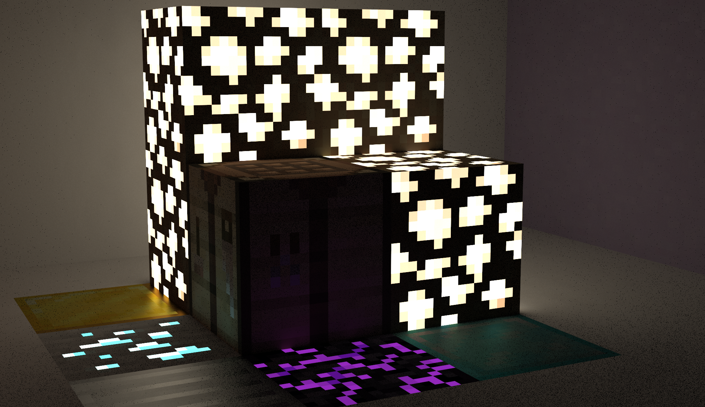
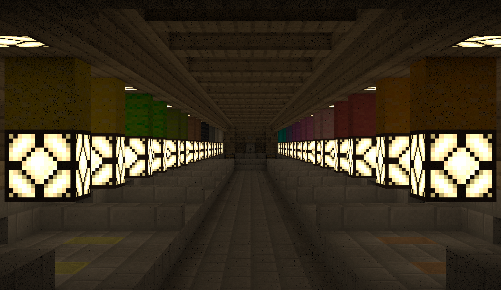

The primary goal of this project is to extend CS184's path tracer to support beautifully rendering minecraft worlds and small builds by importing minecraft scenes into the path tracer. Our first task was to create a proof of concept and import all the materials and geometry into our pathtracer. We used assimp to load in the files, vertices, and textures. To load in the geometry and textures we successfully refactored importing and creating triangles, UV mapping, and the other bells and whistles needed to use textures in the pathtracer. From here, we worked on loading in full scenes through COLLADA files, and rewriting the pathtracer's camera class. Before rewriting the code we used the pre built camera and light settings from the Cornell box's COLLADA files. After being able to load full scenes we worked on implementing PBR in our path tracer. ADD INFO ABOUT PBR
Our first goal, as stated above, was laoding in the geometry and textures.
We Used OBJ/MTL files for the materials and geometry, and used the course’s
original COLLADA files for the lights and camera. To load in the images we used
Open Asset Import Library (assimp) to load in the vertices and textures from an
OBJ and MTL file. Then we rewrote the Triangle class constructor to take in vertices,
normals, and the triangle's material from assimp. Then, we moved on to implementing
the Minecraft textures. We created a new triangle class, TexturedTriangles
so that we could differentiate between textured and untextured triangles as they have different
draw and intersection method which returns a BSDF with the texture’s color at the point of intersection.
Additionally, we implemented UV map textures to triangles and created a BSDF for each pixel in the texture.
ADD INFO ABOUT CAMERA AND COLLADA files
ADD INFO ABOUT PBR
The main problems we encountered during this first part of the project were refactoring code to use assimp's
functions and variables and implementing textures when images are imported upside down. We spent extensive time reading
through assimp documentation to integrate assimp into the project 3-1 Pathtracer. The OBJ files we were given
put the y coordinate of 0 at the bottom instead of the top so when we applied texture mapping the textures would be upside down.
To fix this we used the STB image library to flip images vertically on load.
ADD INFO ABOUT CAMERA AND COLLADA files
ADD INFO ABOUT PBR
In the first project we learned about importing info from OBJ and MTL files using the Open Asset Import Library.
Additionally, we learned about implementing UV mapping and textures using the information from assimp.
ADD INFO ABOUT CAMERA AND COLLADA files
ADD INFO ABOUT PBR
|  |
|  |